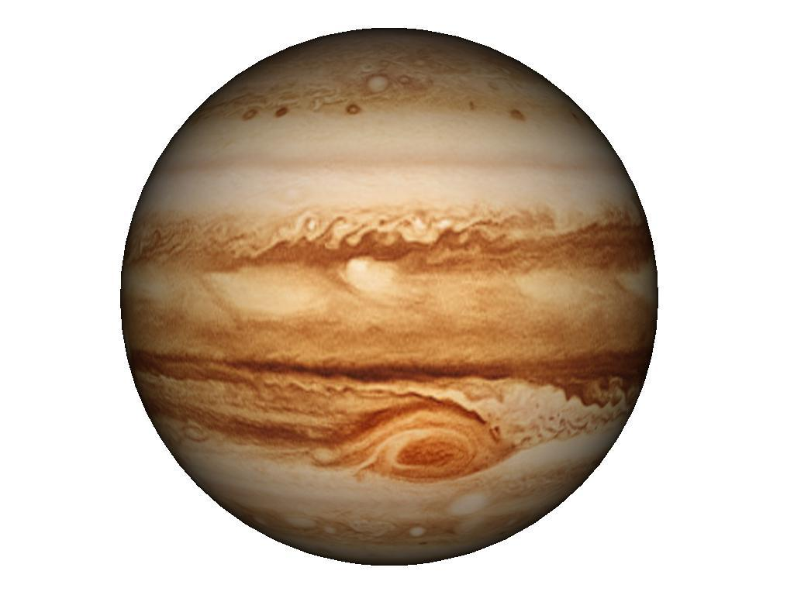

JUPITER
The planet Jupiter is the fifth planet out from the Sun, and is two and a half times more massive than all the other planets in the solar system combined. It is made primarily of gases and is therefore known as a gas giant.

About Jupiter
- Mass: 1,898,130,000,000,000,000 billion kg
- Known Moons: 67
- Notable Moons: Io, Europa, Ganymede and Callisto
- Surface Temperature: -108 Celcius
Top 3 Jupiter Facts
- The Great Red Spot is a giant storm on the planet.
- Jupiter orbits the Sun once every 11.8 Earth years.
- Jupiter has a thin ring system.
Want to know more?